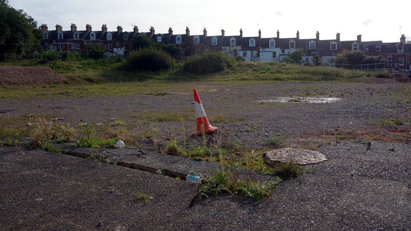
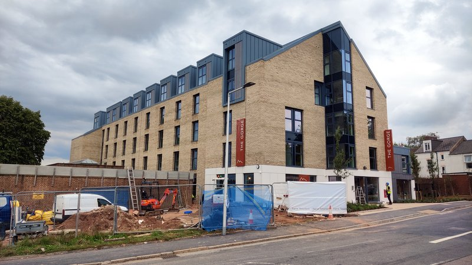
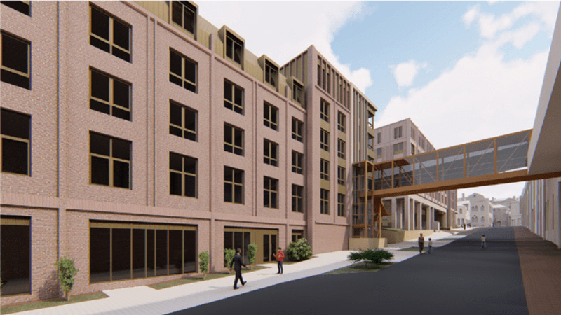
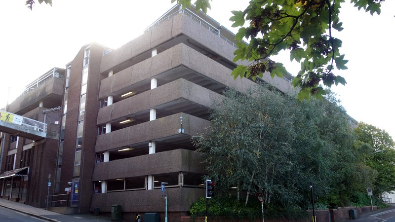
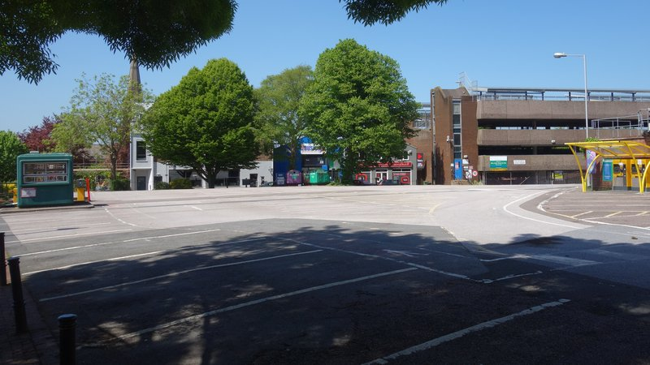
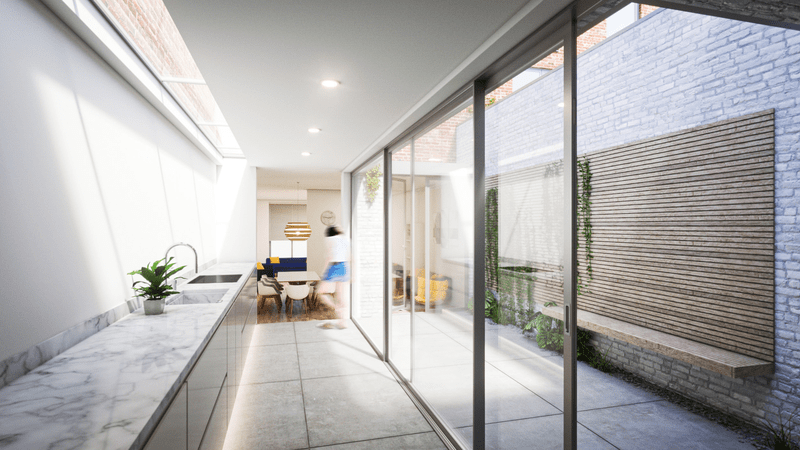
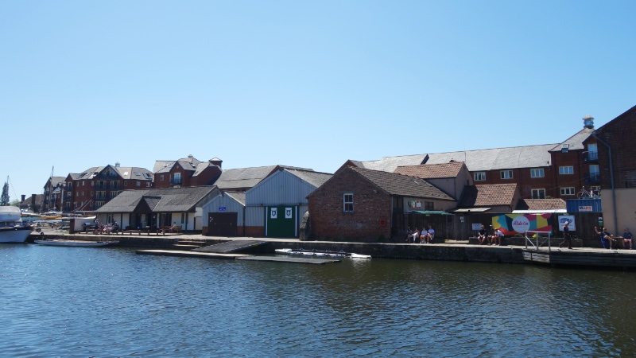
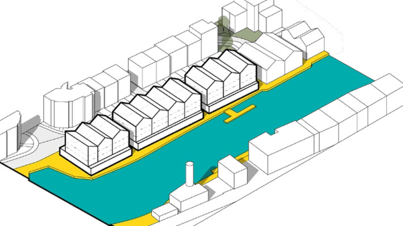

Council leader Phil Bialyk last week sought to change course at Mary Arches Street car park and the Clifton Hill sports centre site by rejecting the council finance director’s proposal to get best value for the public purse by selling both for student accommodation.
Both assets are first in the fire sale queue following the failure of Exeter City Living, the council’s subsidiary property development company, which has left the council needing to raise around £9 million to cover the company’s outstanding debt.
Selling either asset for redevelopment as student accommodation would be a political calamity for the council leader, especially the Clifton Hill site given its torrid history.
So instead of reversing the council’s policy of not selling land for student accommodation, he amended the sale proposals, apparently determined to demonstrate that he and his Executive committee colleagues would stand by the residents of St David’s and Newtown no matter the cost.
 Clifton Hill sports centre development site
Confidential valuations for the site sale options the council had considered were attached to the end of the Executive committee agenda, when public and press were to be excluded from the meeting, but the council leader moved the decision up the agenda to please the public gallery.
The valuations remained under wraps, so the committee voted in favour of the revised sale proposals without first discussing their financial consequences, although local ward councillor Matt Vizard did admit, speaking from the floor, that the council would be “turning down millions in potential receipts” by ruling out student accommodation use.
The revised proposals are to sell the Mary Arches Street car park land identified in the appendix one boundary map with “the multi-storey car park site for co-living use, and the surface car park for residential use”, and to sell the Clifton Hill land identified in the appendix two boundary map for use as residential homes while “retaining the green shaded area for existing use as an open space”.
Presumably-proposed Mary Arches Street car park development site sale appendix four boundary map
As the appendix one boundary map does not include the surface car park, we assume the council leader intended to refer to the appendix four boundary map, which does. His amendments also mentioned yellow and purple shaded areas on the Clifton Hill map, but as these appear only on the appendix three map we assume these references are redundant.
It’s also not clear whether “retaining” the Clifton Hill green space for “existing use as an open space” means it will be excluded from the sale or included in it with a covenant to require the site’s new owner to retain its use as such even though it will no longer be publicly-owned.
The revised proposals will now go to Tuesday’s meeting of the full council, where these issues will presumably be clarified before the proposals are approved. The £800,000 budget to enable the sales remains unchanged.
Council officers would then be tasked with working out how to deliver the newly-restricted sales before reporting back to the Executive committee at an unspecified future date. Further ratification at a meeting of the full council would then be required before any land is sold.
Proposed Clifton Hill development site sale appendix two boundary map
Selling both sites for student accommodation use would have fetched the best price, although doing so was not guaranteed to raise the required £9 million, as the council finance director’s report made clear.
Student accommodation is the most lucrative development form in Exeter for three key reasons. The very high residential densities its tiny, temporary living spaces allow, the insatiable demand created by the university’s inexorable expansion, particularly from an increasing number of overseas students, and the rents its students pay, which are among the highest in the country.
Nevertheless, student accommodation developers face the same underlying issues as the rest of the construction sector, including materials and labour shortages, as well as currently high financing costs.
Now is not a good time to be selling any large development site, especially if it presents additional brownfield challenges. Another recent report said that none of the council’s brownfield housing development sites are currently viable and “will remain so without significant government interventions”.
Several student block sites are stalled in Exeter despite having full planning consent, or are being dragged out by their developers. The sixth planning application for the same scheme in more than six years is currently being considered for the site of the former King Billy public house at the top of Longbrook Street.
According to a report submitted as evidence in the Heavitree Road police station site planning appeal, more than 2,000 student accommodation bedspaces have planning consent in the city of which only 110 are being built.
Heavitree Road police station site proposals illustrative elevation
Nevertheless, the council finance director’s report says, selling sites that are particularly suitable for student accommodation for any other use “could mean foregoing something in the region of 70% of the site’s potential value”.
Would selling for co-living development at Mary Arches Street multi-storey car park really mean losing 70% of the site’s value? Surely co-living blocks are simply purpose built student accommodation by another name?
The council’s political leadership wants us to think not: its policy not to sell council land for student accommodation wouldn’t stand up otherwise. Nor do council officers treat the two uses the same way, although for different reasons.
The new Community Infrastructure Levy, a charge the council imposes on most new development in Exeter towards the cost of infrastructure that is needed to mitigate its impact, gives co-living blocks a big discount on the grounds it is an untested form of development here.
Co-living developers are to pay one third of the charge levied on student accommodation development to reflect challenges that the council says make co-living much less viable to build.
Haven Banks revised scheme illustrative view
The distinction the levy makes between the two uses isn’t quite as artificial as first appears, but not because the design form of co-living blocks has “specific characteristics and acknowledged differences to others types of development”, the justification given for the discount.
The design form of most new student accommodation blocks is essentially indistinguishable from co-living as studio rooms have replaced the cluster flats that used to characterise student halls.
Instead, a consultation response to the huge hybrid Haven Banks redevelopment scheme that was approved at Tuesday’s council planning committee meeting, in which 43% of 423 units are co-living studios, points to a much more significant difference between the two: their business models.
The Devon and Cornwall Police Designing Out Crime Officer said: “Given the nature of co-living developments it seems likely that the resident population could be somewhat transient with potentially a high turnover of individuals. This can make creating a feeling of community somewhat challenging.
“Shared amenity space is a key element of the co-living model, so detailing ways in which a sense of community and ownership can be created needs to be considered and demonstrated.
“If such a sense is not created, it leaves the development vulnerable as residents don’t identify with communal space and become disassociated from them leading to an increase in crime and anti-social behaviour.”
 The Gorge being rushed towards completion in September
Purpose built student accommodation is restricted to students, but no such homogeneity is proposed for co-living blocks, where essentially anyone can rent rooms provided they can pay.
It nevertheless appears that Exeter co-living developers intend to rent to students: all the city’s proposed and consented schemes, except Haven Banks, are very close to one or the other of the university’s two Exeter campuses as well as existing student accommodation blocks.
Only one co-living development has so far been built in Exeter, The Gorge. It sits largely empty several months after completion, apparently because it didn’t open in time for the beginning of term at St Luke’s campus on the other side of the road.
If this block is anything to go by, where rents are so high that most local people do not earn enough to become tenants, the number of people in Exeter who could both afford to rent a co-living studio and who might also want to do so is very small. Unless you include students with wealthy parents.
But what if Exeter’s co-living blocks do not fill with students?
The business model risk these developers face is that purpose built student accommodation blocks are, in effect, gated communities that offer relative security to tenants who are all here to attend the university and all arrive at the beginning of the academic year and leave at the end.
The sense of community that is baked in to these blocks, where everyone is more or less on the same page, is not replicated in co-living, where anyone at all might be renting on the same corridor and using communal areas, and faces can change from week to week.
 Harlequins revised scheme illustrative elevation
There has never been any evidence presented that demonstrates demand for co-living in Exeter, as distinct from demand for accommodation driven by the city’s huge student population.
Harlequins, on the other side of the road from the Mary Arches Street multi-storey car park, was the first co-living development to gain planning consent here.
Are construction sector challenges the reason work has not begun more than three years after planning permission was granted, or are its developers holding back because of the risk that, were students not to fill the blocks, there would be too few non-student tenants to turn a profit?
The scheme’s developers succeeded in revising its planning consent in November 2021, effectively extending the deadline to begin work until this time next year. When asked, they would not say when works might start.
Three other proposed co-living schemes are pending consideration by planning officers. Exeland House, between two large city centre student blocks, Victoria Street, in the heart of student HMO-saturated St James and Summerland Street, opposite The Depot.
All have yet to come before the council planning committee for a decision and none will be built anytime soon, even if they do gain planning consent.
The Heavitree Road police station site scheme is another huge hybrid, half co-living, half student accommodation. The council refused it this time last year, and the appeal against the refusal begins next week. If the scheme is allowed, by no means a racing certainty, completion would be at least two years away, probably more.
With The Gorge largely empty and the Haven Banks developers saying only that they aim to start work at the end of next year, the co-living business model remains unproven in Exeter and will stay that way for a long time to come.
 Mary Arches Street multi storey car park
Selling Mary Arches Street multi-storey car park for student accommodation would not only have fetched the highest price, it would have side-stepped the business model risks co-living presents to Exeter developers.
And this isn’t the only problem, on top of construction sector and financing challenges, that developers considering a punt there face. There are two others that are not considerations at any of Exeter’s other co-living or hybrid scheme development sites.
One is the challenge presented in demolishing such a large reinforced concrete structure. The heavy machinery that is required is not readily available in the South West, which is partly why the old bus station beside St Sidwell’s Point still stands more than two years after its replacement was opened.
The council received a £1,310,000 government Brownfield Land Release Fund grant towards demolishing the multi-storey car park two years ago but hasn’t been able to act. If works don’t begin by the end of March the money becomes repayable unless the government agrees to extend the deadline.
 Mary Arches Street surface car park
The other issue, now the council leader’s site sale proposals include the surface car park as well, is that archaeological digs for Roman remains will also be required.
Would a private sector developer take on the risk of important finds emerging from beneath the tarmac or will the council have to excavate as well as demolish before putting the site up for sale?
Even with half the site reduced to rubble and the other half dug up, a prospective buyer would still have to be convinced that both halves could be brought forward profitably for the restricted uses that the revised sale proposals prescribe.
As construction sector challenges, high financing costs and co-living business model risks will all be in place for some time to come, it is difficult to imagine a developer offering to pay more than rock bottom for the Mary Arches site anytime soon.
Clifton Hill redevelopment illustrative elevation
And what about the Clifton Hill sports centre site? Its viability for residential redevelopment is clearly also in doubt: the council has already tried to bring it forward this way three times.
Residential use was the basis of the sale proposed in 2018, then Exeter City Living failed to find a delivery contractor on the same basis, with planning consent, in 2022 and again last year.
The council intends, at least to begin with, to try to find a developer willing to buy the site with its existing consent for “high quality, exemplar homes designed to the highest standards of sustainable, low carbon design”.
This consent not only no longer includes any affordable housing but also means the resulting high-specification town houses would be very expensive to buy, as reflected in Exeter City Living’s marketing, which was not aimed at local residents.
A September 2021 viability assessment commissioned by the company said that the planned Clifton Hill houses, which range from 121 to 225 square metres in size, would sell for £3,588.87 per square metre.
The 16% increase in Exeter sale prices since then would mean the smallest would cost £500,000 and the largest £940,000 if they were marketed today.
And the council can only sell the site with the existing consent if it wants to keep its price negotiation cards close to its chest. As the local planning authority it cannot take a decision in private if it relates to proposed development for which it may grant itself planning permission.
As at Mary Arches, it appears that any developer willing to buy the Clifton Hill site with its use restricted to residential housing would be in a position to drive a very hard bargain indeed.
 Clifton Hill redevelopment illustrative interior
As the council finance director says, the only way to find out what the two sites are really worth is to take them to market. And then to complete the sales.
Let’s assume council officers address the viability issues at Mary Arches Street and eventually find buyers for both sites with their uses restricted by covenant, albeit at knock-down prices.
It’s a pretty safe bet that the council will need the Secretary of State’s permission to sell each for several million pounds less than the best prices they would otherwise fetch, as happened when the council sold Clifton Hill sports centre to Exeter City Living nearly four years ago.
Let’s assume this permission is forthcoming. After all, the government won’t be concerned that the houses at Clifton Hill will be high-spec homes for the wealthy, or that the co-living studios at Mary Arches Street car park will be tiny, expensive bedsits for the transient, whether students or not.
It will be content to see publicly-owned assets sold cheap to private developers, and it won’t be the government’s problem that the council won’t raise anywhere near the £9 million it needs to cover Exeter City Living’s debt from the sales.
 Exeter canal basin development site
But this outcome will be the council’s problem. It will mean the sale of more council assets, with the site at the head of Exeter ship canal currently occupied by the Ride On cycling charity, Exe Water Sports Association and an adjacent boatyard apparently next in line.
The is one of several sites that were also in the Exeter City Living development pipeline, with significant feasibility work already complete, at the point the council decided to all-but wind up the company.
Bonhay Meadows, the Cathedral & Quay car park and Belle Isle depot have all been ruled out, and the council can’t sell the Glasshouse Lane site as it doesn’t own it.
The policies in the council’s draft Water Lane area planning document that refer to the canal basin site make no mention of non-residential ground floor uses, and the accompanying illustration shows only blocks of flats.
Exe Water Sports Association and Ride On Cycling are mentioned only once each in the 154-page document, and both only in passing. Their fate, along with the site, looks like it is already sealed.
 Water Lane SPD canal basin zone illustration. Source: Exeter City Council.
At the end of last week’s Executive meeting the committee also voted to add £3.8 million to the council’s already undeliverable £42 million capital programme, of which £22 million is unfunded, by increasing the Exton Road recycling depot upgrade budget to £8 million.
This budget is “subject to the identification of sufficient capital receipts to finance the whole project”, meaning another £8 million in asset sales on top of the £9 million it already needs to raise this way.
The council also has to find another £5.1 million in cuts to its revenue budget to balance the books over the next four years, on top of the £3 million it has already cut from its 2023-24 budget.
So the question that’s left hanging is: which other assets will the council now have to sell, first to cover Exeter City Living’s debts then to pay for its other capital shortfalls?
The council leader has made probably the most prudent political move he can in the circumstances, short of reversing the council’s policy of not selling its land for student accommodation to get the best price for as few of the council’s assets as possible.
Doing that would instead be the most prudent financial move.
No doubt many residents will think that his change of course has saved the day for “the people of Exeter”, a paraphrase of the prime minster that he keeps repeating, helped to that conclusion by headlines in other, less scrupulous local news publications.
And postponing the final Mary Arches Street and Clifton Hill site sale decisions until a report comes back to the Executive next year may well mean that little more is said in public about either until after the May local elections.
In the meantime Exeter City Living debt related to the Clifton Hill site alone is costing the council £80,000 a year to service, and the list of assets the council needs to sell is getting longer.
Whatever is eventually built on land the council sells to cover its Exeter City Living debt, it should not obscure the colossal and entirely avoidable waste of public money that has led the council to such a pass.